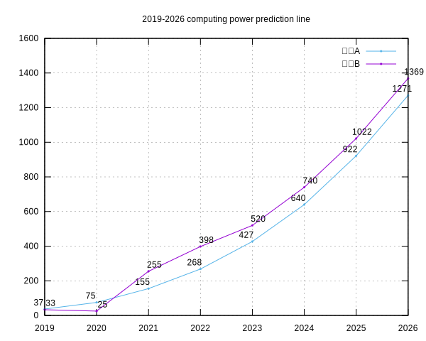

在neo Emacs中制作表格和绘图
2023-10-20
2 min read
在Neo Emacs中制作表格和绘图可极大激发我们的生产力, 除了使用PlantUML、D2、dot graphviz等绘图工具外, 可以将 org table 与 gnuplot 结合形成强大的绘制统计报表的需求, 进行各类汇总报告分析.
Org Table
org table 支持进行列运算通过 #+TBLFM 标签编写表达式可对列进行多次的操作.
| 符号 | 意义 | 开始值 |
| @ | 指定行 | 1 |
| .. | @3.. 表示从第3行之后 | |
| $ | 指定列 | 1 |
| :: | 分隔符多个执行的表达式 | |
| @# | 行号 | 1 |
分析下面这行表达式的意义, 等号左边表示要赋值的表格的范围, @3..$1 表示赋值范围从第3行第1列至最后一行第1列.
等号右边是一个运算表达式, @2$1 表示初始值为第2行第1列 . @# 表示当前行号.
由于我们是从第3行开始赋值, 因此表达式首次执行该值为3, 最后进行了减 2, 则 @3$1=2019+3-2.
通过分析可知道,这个表达式其实是让第一列从第2行开始向后自增.
| 年度 | 平台A | 平台B |
|---|---|---|
| 2019 | 37 | 33 |
| 2020 | 75 | 25 |
| 2021 | 155 | 255 |
| 2022 | 268 | 398 |
| 2023 | 427 | 520 |
| 2024 | 640 | 740 |
| 2025 | 922 | 1022 |
| 2026 | 1271 | 1369 |
#+TBLFM: @3..$1=@2$1+@#-2
Gnuplot Histograms
Gnuplot comes with a large collection of demonstration plots. You can step through these interactively by typing the command below in gnuplot’s demo/ directory — it should be part of your installation, otherwise get it from the source code archive or file-by-file from the git repository.
| command | 说明 | 值域 |
| data | 选择数据表格 | 表格设置: #+TBLNAME: data-bb3 |
| exports | 导出方式 | code、results、both、none |
| set title | 设置标题 | 显示在图片表格上方 |
| set boxwidth | 设置柱宽 | 建议: 0-1之间的小数 |
| set yrange | 设置Y轴范围, 改boxwidth生效 | [0:1600] |
| data u | 每一行设置表示一个直方图 | - |
| plot 2:xticlabel(1) | 设置Y:X轴对应列 | 2表示Y轴高度列, 1表示用第1列作为X轴显示内容 |
| plot title | 设置图例名 | “legend” with boxes |
| using 0:2:2 | 设置柱标记数 | 0:2:2, 最后一个2表示用哪列数据 |
| using offset | 设置柱标记数位置 | 0,0.5 分别表示x和y方向的偏移量 |
| with | 图表类型 | histograms、points、linepoints |
| style | 图表样式 | linecolor、pointtype、pointsize |
set title "2019-2026 Computing power prediction"
set grid
set autoscale
set boxwidth 0.9
set yrange [0:1800]
set style histogram gap 1
set style fill solid 1.0 border
plot data u 2:xticlabel(1) title "平台A" with histograms linecolor rgb "#3498DB", \
'' using 0:2:2 with labels center offset -1.5,0.5 notitle ,\
data u 3:xticlabel(1) title "平台B" with histograms linecolor rgb "#1ABC9C", \
'' using 0:3:3 with labels center offset 1,0.5 notitle ,\
data u 2:xticlabel(1) title "平台A" with linespoints pointtype 7 pointsize 0.6 linecolor 1, \
data u 3:xticlabel(1) title "平台B" with linespoints pointtype 7 pointsize 0.6 linecolor 2
set title "2019-2026 computing power prediction line"
set grid
set autoscale
set boxwidth 0.9
set yrange [0:1600]
set style fill solid 1.0 border
plot data u 2:xticlabel(1) title "平台A" with line, \
'' using 0:2:2 with labels center offset -1,0.5 notitle ,\
data u 3:xticlabel(1) title "平台B" with line, \
'' using 0:3:3 with labels center offset 1,0.5 notitle
